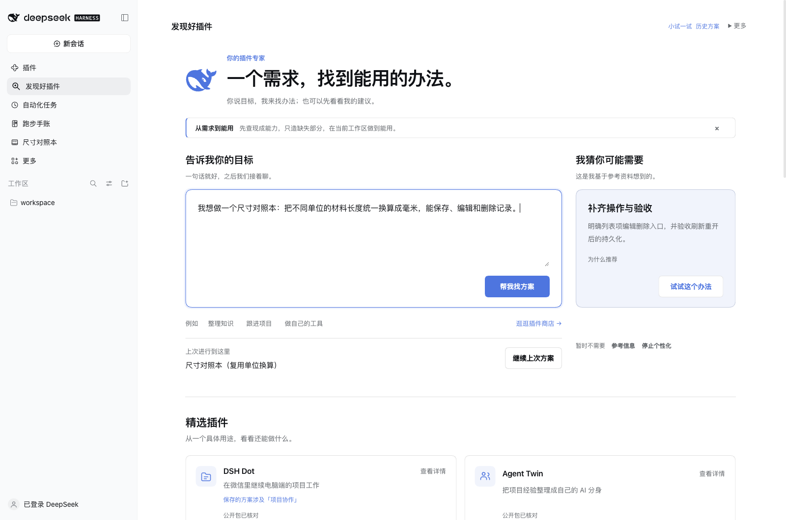
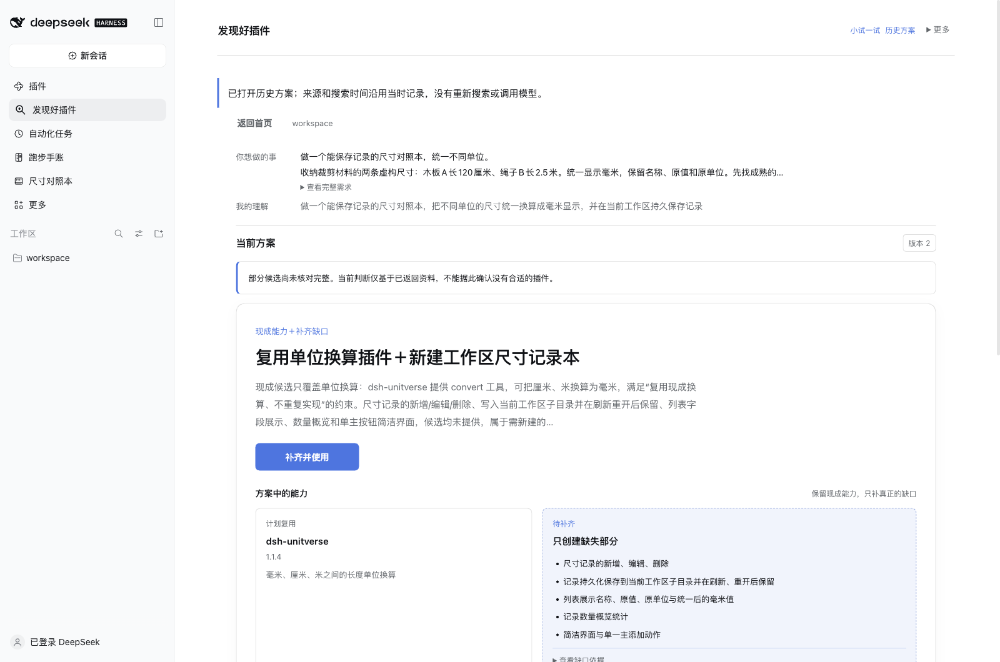
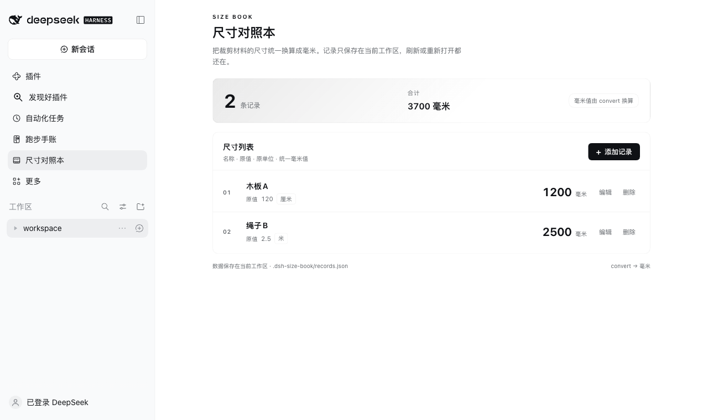
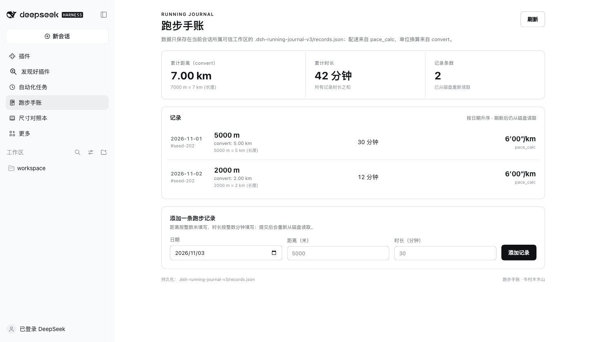

真实官方 Harness 中的首页、混合方案与两个实际成果。合成资料实机演示；生成样例不预装、不公开发布。图片直接来自运行界面。
当前 C8 真实首页；输入框为同一合成尺寸任务的未发送简述。右侧是已授权最近一条合成方案摘要后，真实模型生成并缓存的建议，未采纳执行。

当前 C8 只读打开同一任务的历史版本 2；沿用当时真实搜索结果，没有重新搜索或重发创建。候选覆盖不完整的提示原样保留。

当前 C8 官方隔离 Host，Creator 生成的私有样例已首次安装并经过一次会话关联修正；新增、编辑、刷新、切换与删除实测通过。截图恢复为原两条合成记录。

样例在早期候选完成创建、首次安装和操作验证；当前 C8 实界面读回 7 km、42 分钟、2 条记录。不是 C8 从零重新生成的证据。
